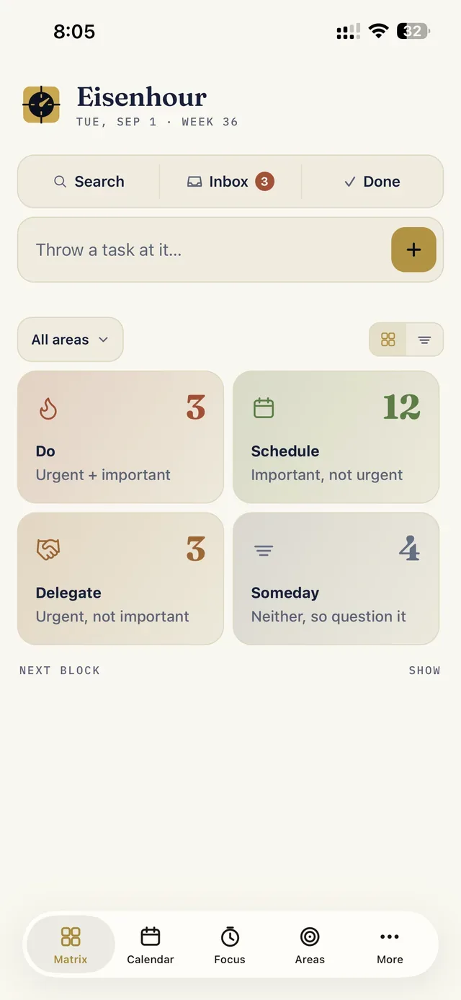
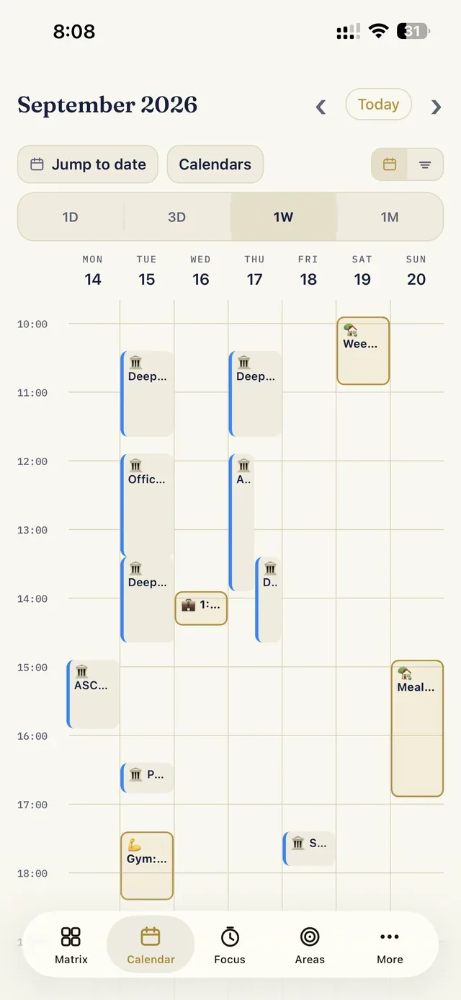
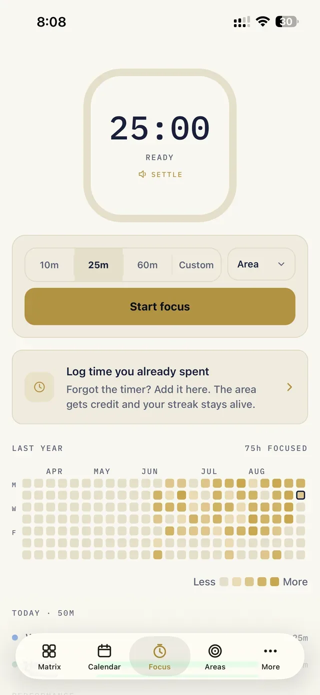
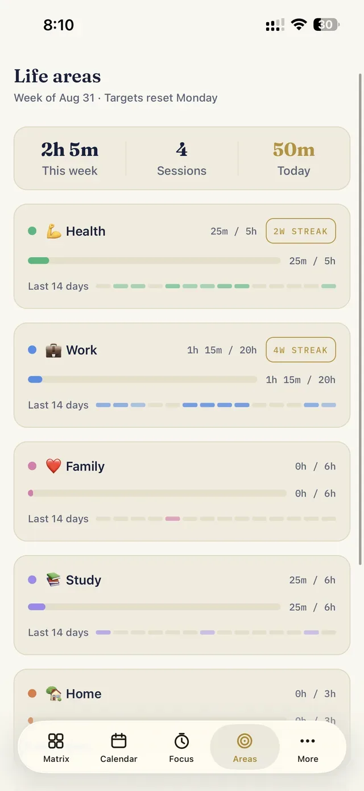
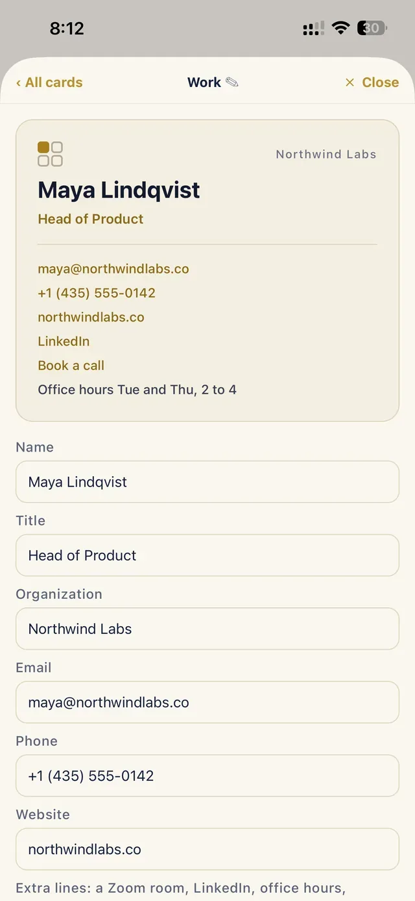
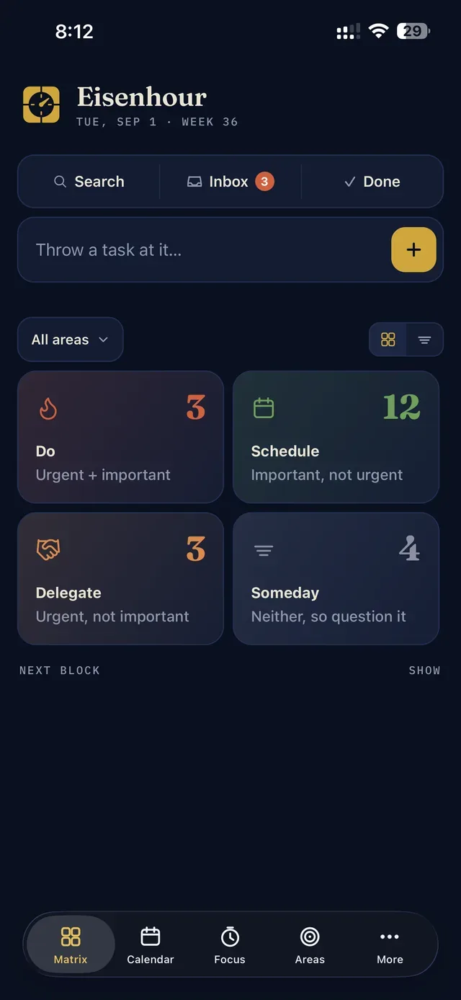

iPhone app · App Store, 2026
Eisenhour
Eisenhower matrix, by the hour. Most to-do apps make lists; Eisenhour makes decisions, then turns them into hours on a real calendar and shows you where your life actually goes.
§ 01 — What it does
The method
Decide, then block the time
Two questions sort everything: is it important, and is it urgent? Every task lands in one of four quadrants: do it now, schedule it, delegate it, or question it. Then the app does what matrix apps never do: it gives the decision a place on your day, in fifteen-minute blocks, beside the Google, work and iCloud calendars already on your phone.
A focus timer logs every session and rings on a locked phone; a year-long heatmap shows where the hours went. Life areas carry weekly targets and streaks, so work stops quietly winning. And a business card you can share as an image or a PDF with tappable links.
The stance
Yours alone
Local-first by design. Everything lives in a database on the phone and rides the normal iCloud backup. No account, no server, no analytics. The App Store privacy label reads “Data Not Collected” because there is nothing to collect.
The method is free forever. One purchase, Eisenhour Pro, unlocks planning any day, unlimited areas and cards, the full year of focus history, reports, export and import, copying a block out to a real calendar, and the dark theme. No subscription.
§ 02 — Screens, from the shipping app






§ 03 — How it was built
Ten days, one developer, one AI pair
From a private planner to the App Store
Eisenhour grew out of a planner I had run my own working life on for years, first as a web app with a server. The app version keeps the method and drops the server: SQLite on the device, iOS itself as the calendar sync layer, StoreKit for the one purchase. Built with Expo and React Native so a single person could ship a real native iPhone app, first from a Windows machine and then from a Mac, with Claude Code as the pair. The product site, eisenhour.app, is three static pages on Cloudflare in the app’s own palette.